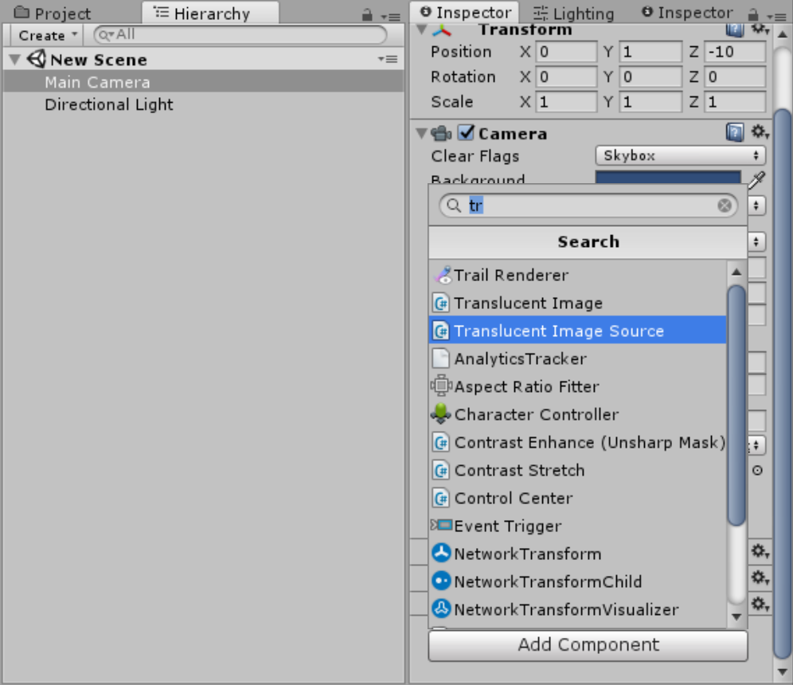
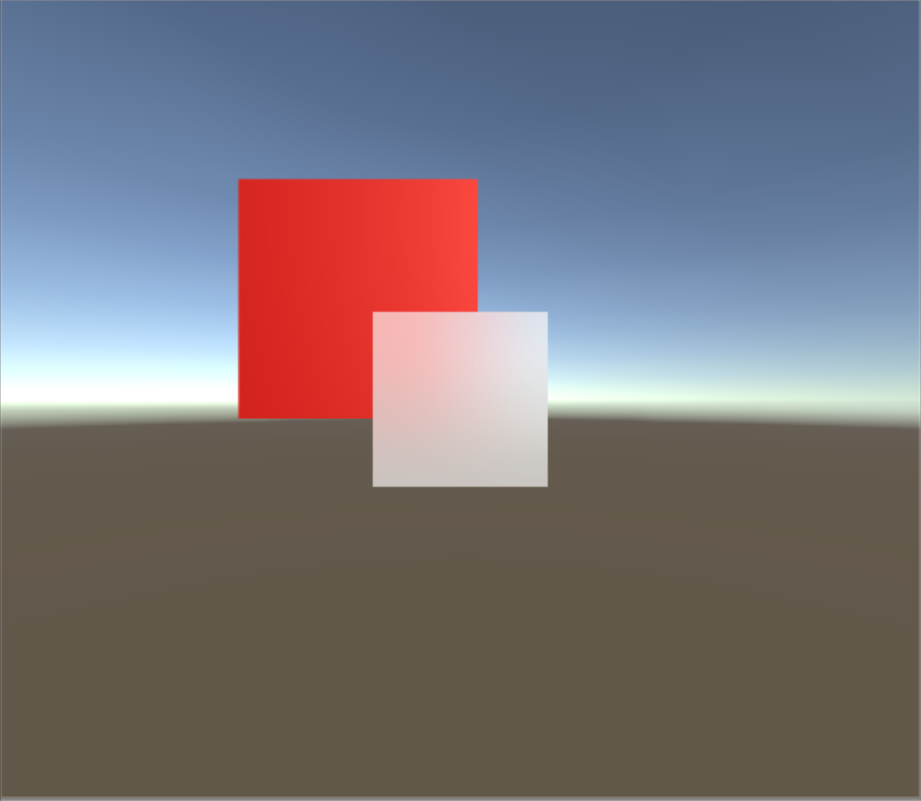

This is the official online documentation of the Unity Asset Translucent Image. You can get it here.
You need some basic knowledge about Unity in order to follow this documentation, if you don't, check out Unity official tutorials
If you haven't, I highly recommend check out the demo (WebGL/Android)
Note:This package is still in early development. If you find any problem in the package or this documentation, feel free to contact me either by the form below or by email
Getting Started
Add Translucent Image Source component to your main camera
Create UI/Translucent Image as you would with built-in UI
Done! (Red cube is optional and not included in the package)
Customize
There are 2 component that form the effect, both with their own parameter that affect the look of the effect:
==== Translucent Image Source ======
- Size: How much blurryness you want. Doesn't affect performance, but will look bad if the number too big
- Iteration: Increase blur quality and blurryness when it increase. The bigger it is the less performance loss when increasing further
- Downsample: Decrease the resolution before processing to increase performance. Side effect include increase blurryness and possible flickering
- Max Update Rate: How many time the effect update it self per second. It can increase performance and decrease battery usage. Set to 0 to pause, this can reduce power usage/ prevent overheat when you don't need dynamically updating background - like in a pause menu for example
- Preview: preview the effect in fullscreen without creating a Translucent Image
==== Translucent Image ======
-
Source: Translucent Image Source component. This is where the image get the blurred screen. It will automatically being set to the first one found, so you should make sure there on in your screen before creating any Translucent Image
You can always override this to change which camera will be blurred - Color: I don't even write this field.
- Vibrancy: How colorful you want the background to be, 0 mean black and white, negative value will invert the color. This is great for enhancing the detail behind the image, or making death screen.
-
Material: Multiple Translucent Image using the same material will have the same vibrancy, but they will be batch and only take one draw call.
Importance! Material used here must use the shaderUI/TranslucentImage - Raycast Target: same as other UI element, whether it receive pointer event or not.
Change variable at runtime
The demo scene have a few example on changing variable at runtime, both from code and Unity animation system
Frequently asked questions
- How are you?
- I'm fine, thanks